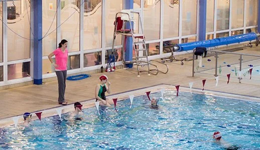

Pool safety & rescue.
Training develops the skills needed for lifeguard duties in a swimming pool environment.
National Pool Lifeguard Qualification · NPLQ
Build the practical skills for poolside safety. Explore training at Bishopstown, check the entry requirements and find the next course.

Training develops the skills needed for lifeguard duties in a swimming pool environment.
Course training includes first aid and emergency-response skills.
Candidates complete the required training before an independent assessment.
Check these starting requirements, then read the full prerequisites on the current course listing before booking.
The full course requires at least 36 hours of training before assessment. Renewal candidates need evidence of at least 20 hours of relevant training and ongoing competence; contact the team before booking a renewal.
Train at Bishopstown
Learning materials, assessment, logbook and a two-year qualification. Held at LeisureWorld Bishopstown.
Check the course listing for remaining places and final booking details.
Check places & book this courseThis course has ended. Ask about the next course.